22 Verified Entries, 13 Adversarial Peer Reviews, and What Broke Along the Way
An open, reproducible computational-physics notebook across rocket combustion, plasma nozzles, and renewable power grids—where every formula is cross-checked against PDEs, archived with independent audit receipts, and gated by automated repo checks.
Milestone 9 Update: Physical Crocco–Cheng Feed Chugging, Indirect Entropy–Chug Coupling & Tri-Band 3D Faceplate (016)
Entry 016 replaces Entry 015’s rigid mass-flux inlet with a physical nonlinear Crocco–Cheng pressurized-manifold, injector-inertance, and Erlang-4 vaporization-lag feed-system ODE directly coupled into our metric-corrected 3D cylindrical compressible Navier–Stokes solver (open-inlet mean-flow equilibrium 8.36×10−19, feed_err = 0.0, automatic DC stability with zero ωhp when np = 0, matching exact 1D Chebyshev chugging frequencies to 0.28–0.61% across stiffness ψ ∈ [0.06, 0.25]).
Independent read-only Peer Review #13 (Claude Opus 5.5, 33 extra 3D NS runs to t = 220) uncovered a genuine physical mechanism hiding behind a +0.025–0.035 gap between our initial 1D isentropic coupled chug solver and the 3D linear coupled PDE: Indirect Entropy–Chug Coupling. Because the compact Marble–Candel choked outlet uses the actual local sound speed cg, its exact entropy-aware linearization is u′(La) = ½M̄c(γp′ − ρ′). Flame-generated entropy waves convecting to the throat reflect with phase ωLa/M̄c ≈ 3.5 rad, lifting bare critical feed stiffness at ωhp = 0.50 from ψcrit = 0.0973 (pure feed) and 0.1702 (1.75×, isentropic) to 0.2574 (2.64×, entropy-aware)—and making the ωhp = 0.15 straight chamber intrinsically chug-unstable (ψcrit > 20, simultaneously explaining Entry 015’s rigid-inlet chugging!). Including the exact entropy-aware outlet row immediately closes the 1D/3D PDE match to 0.19–1.24% in ω and 0.002–0.005 in α. Adding a physical check-valve closure (ṁinj ≥ 0) also separates unclamped reverse-flow overshoot (40.8% with 27.4% backflow) from clean check-valve saturation (28.0% at ψ = 0.07, 26.8% at ψ = 0.09).
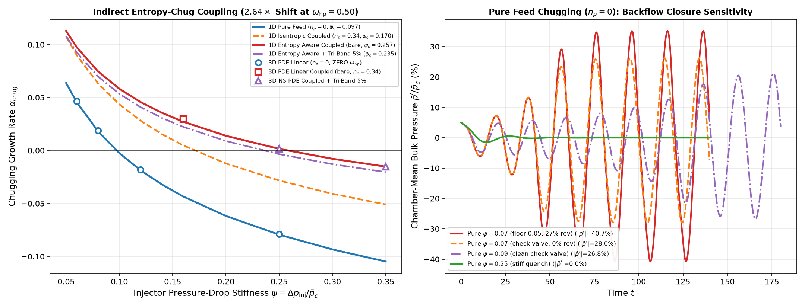
016 (Exp 1 & 2, hardened per Peer Review #13): Pure-feed, isentropic-coupled, and exact entropy-aware 1D Chebyshev chugging growth vs. 3D linear NS PDE markers (ψcrit = 0.0973 → 0.1702 → 0.2574, left), and nonlinear ψ = 0.07/0.09 chugging contrasting unclamped backflow (40.8%) against physical check-valve saturation (28.0%/26.8%) vs. stiff ψ = 0.35 decay (right).
To break Entry 015’s longitudinal 1L rumble without disturbing the micro-hub 1R cavity, we placed a Nodal Mid-Ring 1L Cavity in r ∈ [0.44, 0.74] straddling the exact 1R Bessel pressure node r0 = j0,1/s02 = 0.6276. Because ∫J0(s02r)r dr vanishes across the node, the mid-ring damps 1L cleanly across a beat-free [6, 40] window (−0.1875 vs. bare −0.1094, 1.71× boost; EP peak −0.2312 at ξH = 0.18) with 0.018% 1R cross-talk, while azimuthally segmenting it into ncav = 5 sectors adds +23.4% free 1T damping.
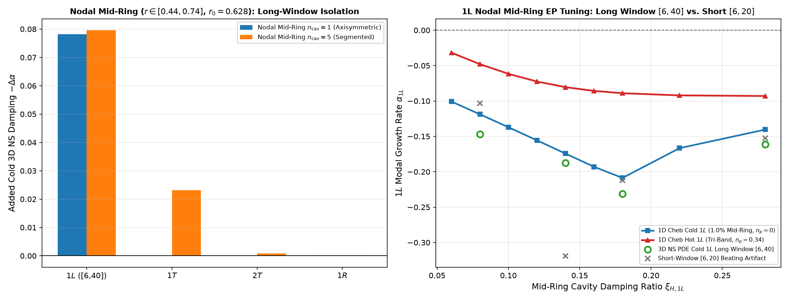
016 (Exp 3, hardened per Peer Review #13): Analytical Tri-Band 3D faceplate modal weights separating micro-hub 1R, Nodal Mid-Ring 1L across r0 = 0.6276, and outer-shroud 1T/2T cavities (left), and beat-free [6, 40] linear 1L exceptional-point damping vs. 1D analytical theory (right, retiring the initial [6, 20] beating artifact).
Extending straight compact-MC runs to t = 220 proved that ψ = 0.25 still sits on the linearly unstable entropy-chug branch (tri40seg_1T grows to 2.66% bulk chugging), whereas stiffening the straight feed to ψ = 0.35 exponentially quenches spin_1T (0.035%), stand_1T (0.017%), spin_2T (0.006%), and 1R (0.000%) at the exact bulk rate −0.0152 through t = 180. Even better, in the metric-corrected true-3D smooth curved bell nozzle (ψ = 0.25, Re = 500), finite-nozzle entropy filtering (Law #15) naturally stabilizes bulk chugging (−0.014 to −0.017), permanently quenching 1L (0.021% at t = 200, a 79,400× wave-energy cut vs. like-for-like bell_bare_1L 6.77%, confirmed 0.020% on refined 36×12×40), 1R (0.001% at t = 180), and 2T (0.133% at t = 120), while bell_tri50_1T (5.49%, 11.88× cut vs. bare 18.09%) and bell_tri50_st1T (4.25%) sit on stationary reduced 1T cycles.
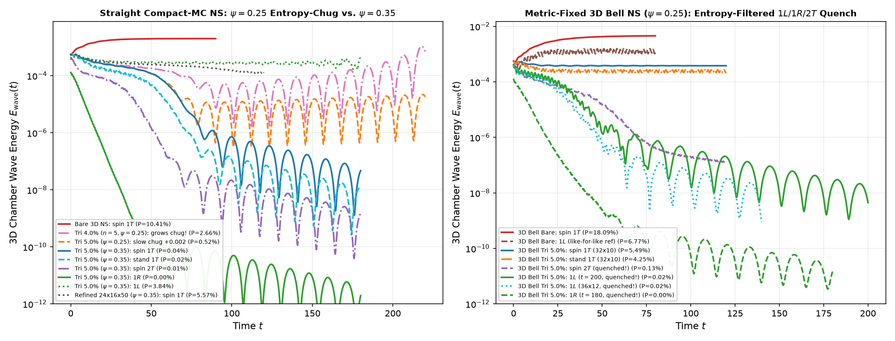
016 (Exp 4, hardened per Peer Review #13): Straight compact-MC ψ = 0.35 exponential quench vs. ψ = 0.25 entropy-chug regrowth through t = 220 (left), and the metric-corrected true-3D smooth bell audit (Re = 500, ψ = 0.25, right): 1L (79,400× cut, 36×12×40 confirmed), 1R, and 2T all permanently quench while bell_tri50_1T/st1T drop 11.88× to stationary reduced 1T cycles.
016, commit 9dee502) and synthesized in Law #19 & Dead End #18.
Milestone 8 Update: Full 3D Cylindrical Navier–Stokes, Partial-Span Baffles & the Transverse→Chugging→1L Cascade (015)
Entry 015 upgrades our 3D conical-frustum solver to full 3D metric-corrected conservative compressible Navier–Stokes (Pr = 0.72, exact mapped-grid ∂x|r = ∂x|η − ηR′∂r + slanted −nxqx; quiescent 1.37×10−18, bare & 5-baffle slip/no-slip curved-bell conservation 1.1–2.3×10−16 / 1.4–2.9×10−16, closed chamber+cavity mass conservation 1.88×10−16). We derived and verified the curved-cylinder stress-free Stokes–Kirchhoff shift (+2m2/[Re(smn2−m2)]), which converges across nr = 14→28 to 0.25% (1T) and 0.45% (1R) of exact 3×3 adiabatic disk dispersion roots at Re = 300.
Independent read-only Peer Review #12 (Claude Opus 5.5, 40 extra 3D NS PDE runs) delivered three critical hardenings: first, matched Re = ∞ vs. Re = 500 straight-cylinder runs (−0.10105 vs. −0.09907 at 48×12×48) proved our initial no-slip Chebyshev match was coincidental because 87% of Chebyshev’s viscous damping sits in an unresolved faceplate Stokes layer (δ ≈ 0.047). Second, on partial-span shroud-ring baffles (Nb = 5, Lb = 0.45, r ∈ [rb, 1]), bimodal c2,re beating (3.376/2.591, ratio 0.73) and m = −3 Bragg scattering made raw e2T fits swing wildly with window—whereas total chamber wave energy Ech isolates a window-, grid-, and Re-robust 1.50–1.77× boost at rb = 0.42 (42% less metal) and 1.86–2.51× boost at rb = 0.58 (58% less metal) across Re = 500, Re = ∞, and refined 36×18×50 grids, proving the mechanism is inviscid 3D diffraction/scattering + inner-edge shedding while leaving the hub wide open for the 0.35% micro-hub 1R cavity.
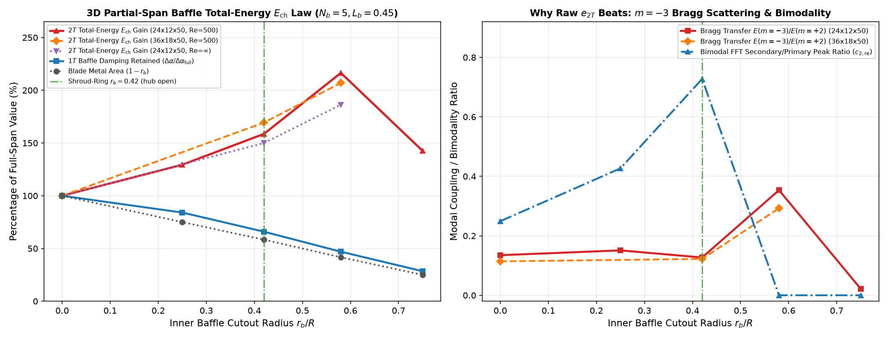
015 (Exp 2, hardened per Peer Review #12): Window-, grid-, and Re-robust total-energy Ech damping boost of partial-span shroud-ring baffles over full-span blades across 24×12×50 (Re = 500 & Re = ∞) and 36×18×50 (left), alongside the bimodal c2,re FFT peak ratio and m = −3 Bragg scattering that caused raw e2T fits to beat (right).
Third, extending Experiment 3 to t = 180 proved that exact mass-conserving ṁ cavity coupling alone does NOT stop k = 0 chugging at ωhp = 0.15: both legacy and mass-conserving runs grow to |p̄′| = 8.15–8.19% and |ΔM/M0| = 3.52% with nonlinear period TPDE ≈ 39 (unexplained by the stable 1D linear mode T1D ≈ 56). Raising the phenomenological flame-response high-pass cutoff to ωhp = 0.50 suppresses Emean by 1.2×105–1.4×106× through t = 180.
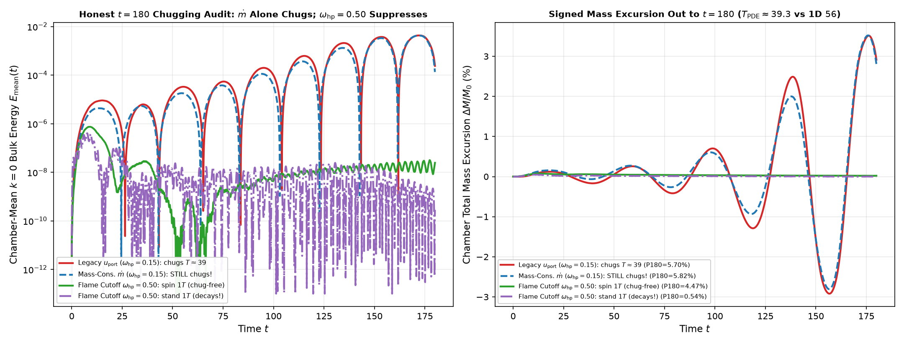
015 (Exp 3, t = 180 audit): Chamber-mean bulk energy Emean(t) (left) and signed chamber mass excursion ΔM/M0 (right). At ωhp = 0.15, mass-conserving ṁ coupling (blue dashed) grows into the same ±3.5% chugging cycle as legacy uport (red), whereas flame cutoff ωhp = 0.50 keeps both spin and standing 1T chugging-free out to t = 180.
In full 3D NS nonlinear audits (Re = 500, np = 0.34, ωhp = 0.50), pairing rb = 0.42 shroud-ring baffles with the retuned 3.0% Dual-Zone faceplate cuts spin_1T wave energy stationarily 5.08× in straight cylinders (4.70× on 20×16×50) and 8.43× in the metric-fixed true-3D smooth curved bell (20.16%→7.03%, stationary to t = 120, E1L = 2.55×10−9)—yet suppressing stand_1T (32×), spin_2T (88×), and 1R (1.01×10−10) unmasks longitudinal 1L rumble (6.65% attractor, growing linearly at +0.0059 even from 1R through t = 180), exposing the full 3D Transverse→Chugging→1L Mode-Migration Cascade.
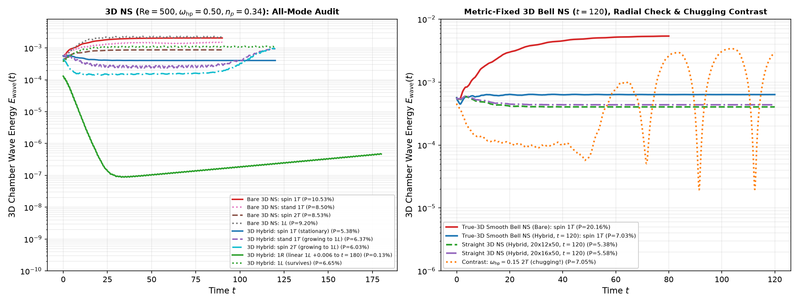
015 (Exp 4, hardened per Peer Review #12): Straight 3D NS all-mode audit showing stationary spin_1T reduction vs. honest longitudinal 1L migration across stand_1T, spin_2T, and t = 180 1R (left), and the metric-fixed true-3D smooth curved bell NS shootout (8.43× cut, stationary to t = 120), 20×16×50 radial check, and ωhp = 0.15 chugging contrast (right).
015, commit 1d0fae2) and synthesized in Law #18 & Dead End #17.
Milestone 7 Update: Full 3D Cylindrical Chamber & Bell Nozzle—Bessel Cutoff, Chiral 1T→1R & Shroud-vs.-Hub Cavities (014)
Entry 014 upgrades the rocket-combustion track from 2D thin-shell annuli (004–013) to a true 3D cylindrical (x, r, θ) conservative conical-frustum compressible Euler chamber & transonic bell nozzle (discrete GCL 2.6×10−18, quiescent 4.7×10−18, curved-bell mass/angular-momentum/energy conservation ~10−16, closed Bessel FFTs 0.23–0.89%).
Replacing integer thin-shell wavenumbers (m = 1, 2) with exact 3D cylindrical Bessel zeros (s11 = 1.841, s21 = 3.054, s02 = 3.832) collapses inviscid quasi-3D WKB bell 1T damping 4.77× harder than 2D thin-shell at Ln = 0.50 (−0.0245→−0.0051, N = 160; bare Hopf at fixed τ̄ = 0.16 drops 3.93× at M̄c = 0.14, 3.37× at τ̄ = 0.40). Yet independent read-only Peer Review #11 drove a crucial discovery: while straight-cylinder axial refinement (nx = 24→96) moves 1T monotonically toward inviscid Chebyshev (−0.0933→−0.0542, late −0.0467 vs. −0.0424), true-3D smooth conical-frustum bells exhibit Sauer/Hall curved sonic-line throat bowing (Mthroat = 0.802→1.403) and retain ~17–20× stronger cold 1T damping (−0.0405 to −0.0465) than quasi-3D WKB (−0.0023) across both axial (nx = 40→80) and radial (nr = 12→20) refinement.
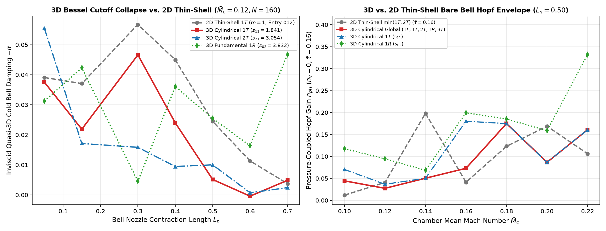
014 (Exp 2, N = 160 converged): Inviscid quasi-3D Bessel bell cutoff collapse vs. 2D thin-shell on single-branch fundamental modes (left) and multi-mode bare bell Hopf envelope at fixed τ̄ = 0.16 (right). True-3D smooth bells (Ln = 0.60, 0.80) stay cleanly supersonic (Me = 1.66–1.83) while steep Entry 012 Ln = 0.50 separates along the wall (Mwall = 0.233).
In 3D cylinders, 2T is strongly detuned from 2ω1T (s21/s11 = 1.659), whereas the axisymmetric radial mode 1R sits within 3.9% of 2ω1T (s02/s11 = 2.081). Consequently, standing 1T pumps oscillating AC 1R ~600× stronger than SO(2)-protected spinning 1T in 2D disks (678–820× on [10, 16]; 427× in reacting 3D throughflow) with exact small-amplitude quartic scaling (A03.99 standing, A03.98 physical second-order spinning), beating detuned 2T (≤ 1.12%) by 4.4–6.1×.
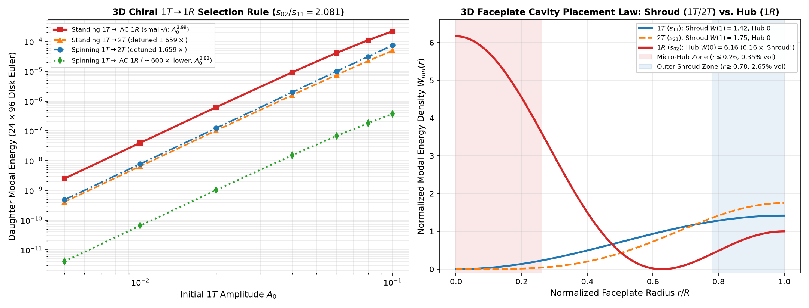
014 (Exp 3 & 4A): Standing 1T→AC 1R quartic resonance vs. ~600× weaker spinning 1T across two decades of amplitude (left), and exact normalized Bessel modal energy densities Wmn(r) separating outer-shroud 1T/2T cavities from a 6.16× stronger centerline micro-hub 1R cavity (right).
Because uniform axisymmetric ports have identically zero 1R coupling (∫01 J0(s02r)r dr ≡ 0) and hub ports have identically zero tangential coupling (Jm(0) = 0), matched-window 3D PDE tests locate the 3D shroud EP peak at ξH ≈ 0.24, confirm 0.5% shroud/uniform gain 1.46×, and prove on refined 24×20×64 grids that a 0.35% micro-hub beats a 5.7× larger 2.0% shroud on 1R by 2.27× ([7, 22]; 1.33× on [14, 24]). In refined reacting 20×20×64 1R shootouts, Shroud-Only fails (7.42% growing) while the Dual-Zone 0.35% micro-hub quenches 1R (0.11%, 6,814× energy drop vs. bare)—and t = 120 audits identify slow k = 0 bulk pressure drift (Emean) in cavity-equipped 1T runs, motivating full 3D Navier–Stokes + radial baffles next.
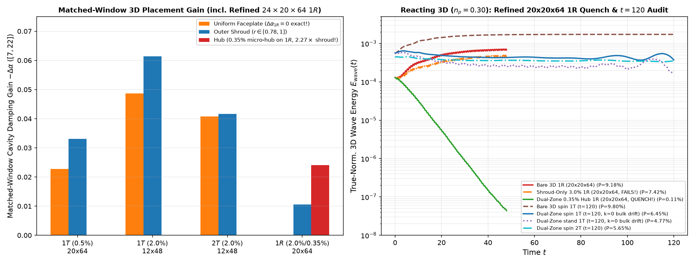
014 (Exp 4B–4C, hardened per Peer Review #11): Matched-window cavity gains −Δα including refined 24×20×64 1R (left), and true-norm. reacting 3D shootout (right) contrasting Shroud-Only 1R failure (7.42%) against 0.35% micro-hub quench (0.11%) alongside the honest t = 120 k = 0 bulk-drift audit.
Milestone 6 Update: Breaking the 120×300 1T→2T Cascade & Coupled Viscous–Transonic Bell Quench (013)
Entry 013 couples our 2D conservative compressible Navier–Stokes solver directly into the explicitly resolved C2 transonic converging–diverging bell nozzle (paired with an exact viscous-base conservative Chebyshev eigen-solver verified to 1.8×10−12 and matching 96×200 PDE to 0.44–3.53%) to crack the central open puzzle from Peer Reviews #8–#9: why the 2.0% 80/20 hybrid kept losing 6.9% bombs to a ~5% pure-2T upper branch.
The root cause is the Higher-Harmonic Baffle–Cavity Downshift Law: protruding Nb = 5, Lb = 0.45 radial baffles downshift 2T 1.43× more strongly than 1T (−17.6%, 1.977→1.630 vs. −12.3%, 1.067→0.936). Leaving ωH,2T = 2.01 detuned the 2T sub-ring by +23%. Retuning ωH,2T: 2.01→1.65 at zero extra cavity volume boosts linear 2T damping 2.61× (80×200) and 2.95× (120×300 e2T) and breaks the inviscid 120×300 1T→2T cascade completely (5.54%→0.04%, 21,158× energy collapse, confirmed decaying to 8.1×10−13 at t = 420 even with a tight 1.5% neck).
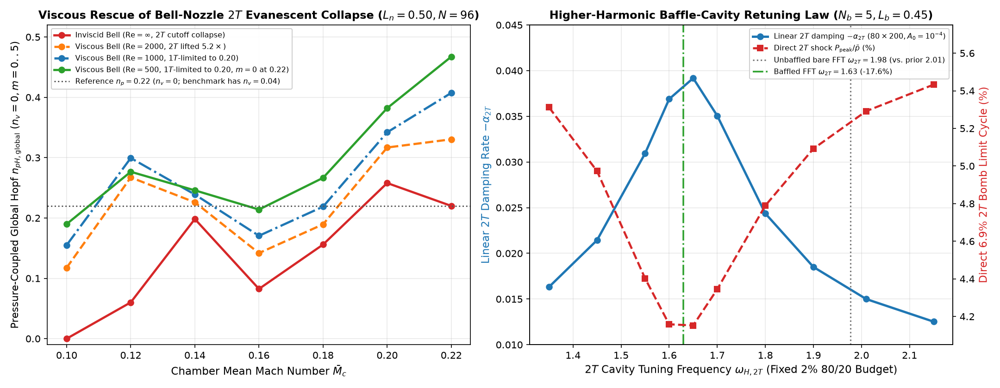
013 (Left): Eddy viscosity (Re = 500–2000) boosts bell cold 2T damping 5.2–7.6×, lifting pressure-coupled (nv = 0, N = 96) global Hopf 4.4–5.0× and quenching inviscid m = 3, 4 whistles. (Right): Fixed-volume 2% 80/20 ωH,2T sweep peaks dead-center on the baffled 2T FFT frequency (1.63–1.65), boosting linear damping 2.61× (2.95× on 120×300).
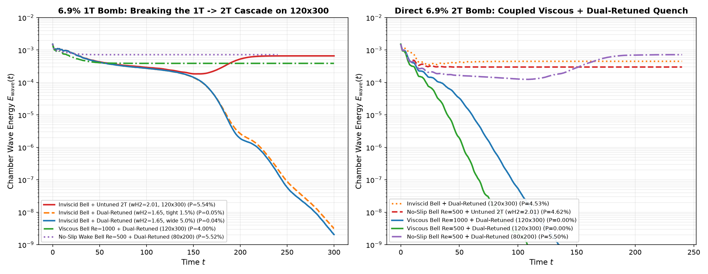
013 (Exp 4): On resolved 120×300 grids, dual-harmonic retuning breaks the inviscid 6.9% 1T cascade (5.54%→0.04%, 21,158× drop) while eddy viscosity (Re = 500–1000) obliterates direct 6.9% 2T bombs (0.0002–0.0004%, E ~ 10−12)—yet at Re = 1000 the 2.0% hybrid subcritically re-ignites into a 4.00% pure-1T cycle.
Independent read-only Peer Review #10 (Claude, 31 PDE runs + complex-step Jacobian) caught a crucial beating-window artifact on the 2.0% hybrid linear rate: on beat-free [50, 95] windows with wall-aware one-sided baffle stencils, viscosity actually increases the 2.0% hybrid’s linear 1T margin (−0.0280→−0.0403 on 120×300), proving the 4.00% Re = 1000 pure-1T re-ignition is strictly nonlinear/subcritical (while standalone baffled bell 1T genuinely flips unstable −0.00722→+0.00198, opposite to a compact nozzle). Rebalancing to 3.0% 85/15 dual-retuned achieves complete resolved 120×300 all-mode quench of both 6.9% 1T (0.002%) and 2T (0.0003%) at Re = 1000—robust to standing bombs, 10% (A0 = 0.08) shocks, and M̄c = 0.16—whereas converged Re = 500 no-slip baffle wakes still sustain a 4.50% pure-1T cycle.
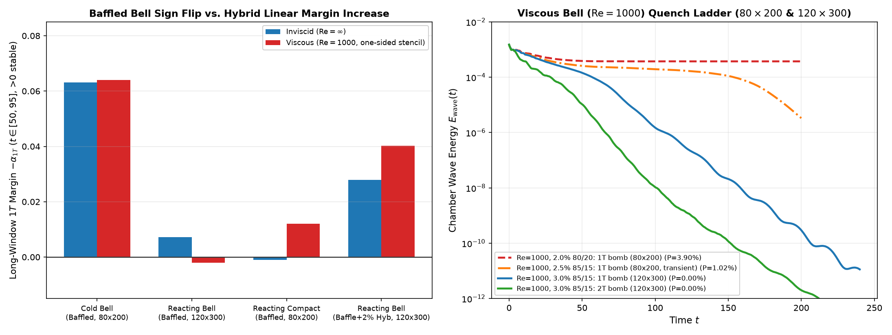
013 (Exp 5, hardened per Peer Review #10): Long-window [50, 95] one-sided-stencil rates separate the standalone baffled-bell sign flip from the 2.0% hybrid’s 1.44× linear margin increase (left), while rebalancing to 3.0% 85/15 achieves complete resolved 120×300 quench of both 1T and 2T bombs at Re = 1000 (right).
Milestone 5 Update: 2D Compressible Navier–Stokes Wakes & Transonic Bell Nozzles (011–012)
We pushed the rocket-combustion track past inviscid compact-nozzle Euler in two major physics upgrades—and independent cross-model Peer Reviews #8 and #9 caught deep nonlinear subcritical traps on both.
In Entry 011 (full 2D conservative compressible Navier–Stokes, Pr = 0.72, periodic energy conservation 2.35×10−16 with 5 no-slip adiabatic baffles), short-wavelength inlet vorticity waves (kvort ≈ ω/M̄) suffer 24× stronger attenuation than Stokes–Kirchhoff at Re = 500, boosting bare M̄ = 0.12 cold damping 2.42× and curing Euler’s sharp-edge baffle grid drift (0.12% spread across 40×120→100×300). Pre-relaxed (t = 150) no-slip blade wakes penalize cold baffle damping by 18–19% (−0.1005 on 100×300), and Peer Review #8 exposed that Entry 009’s M̄ = 0.16 2T trap still triggers subcritically at Re = 2000–5000 (4.37–5.95%), quenching nonlinearly only for Re ≤ 1000.
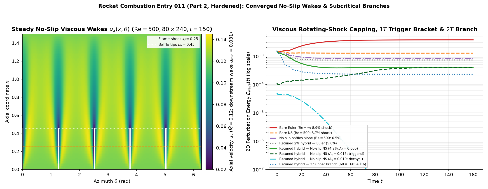
In Entry 012, we replaced compact Marble–Candel with an explicitly resolved C2 2D thin-shell transonic converging–diverging nozzle (Me ≈ 1.83, zero outlet BCs, periodic bell mass/angular-momentum/energy conservation ~10−16, 2-domain Chebyshev smoothly recovering compact MC at Ln = 0.02). Shrinking radius in a bell nozzle (R = √A) creates a finite-width tangential tunneling barrier (ωcut ≤ 1.632) that robustly collapses cold 1T damping for Ln ≳ 0.45 across three smooth contour families, slashes M̄c = 0.18 global Hopf by −63%, drops M̄c = 0.12 global Hopf to 0.060 (3.79× below constant-radius annular 0.228), and triggers bare double-mode failure (12.52% 1T, 6.42% 2T).
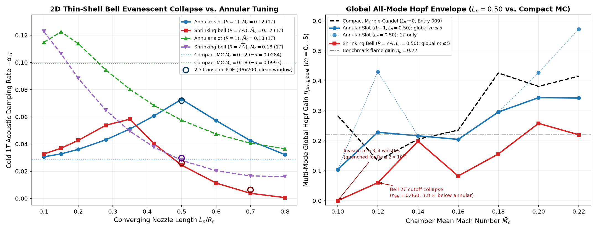
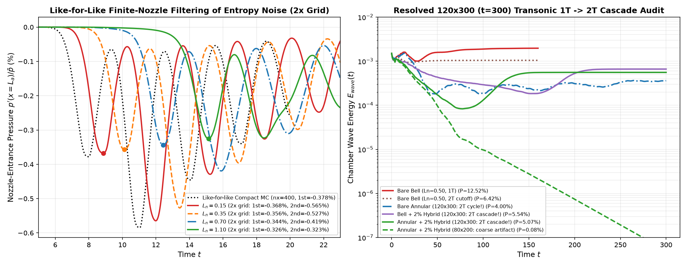
013 on breaking the universal subcritical 2T upper branch.
011) and Peer Review #9 (012) are tracked under reviews/ and synthesized in Laws #1–#15 & Dead Ends #1–#14.
Milestone 4 Update: 2D Throughflow Baffles, Retuned Faceplate Cavities & 64×200 Orifice-Drag Cliff (010)
We embedded real 2D passive hardware directly into Entry 009’s compressible Euler throughflow combustor: split-face mirror HLLC solid-wall radial baffles (conserving mass, x-momentum, and total energy to 10−16) and nonlinear Cummings–Eversman faceplate Helmholtz cavity rings coupled into the choked inlet mass-flux boundary condition.
In steady axial throughflow (M̄ = 0.12), strictly inviscid baffles break our zero-throughflow Dead End #6 by shedding trailing-edge vortex streets (~90–94% physical vs. M̄ = 0 edge dissipation on 80×240), cutting clean linear (A0 = 10−4) 1T growth 3.64× at Lb = 0.45 before re-destabilizing 2.48× at Lb = 0.60 via a −14.5% frequency-downshift Crocco phase shift (plus an unstable co-rotating 2T mode exposed on 80×240). Prime Nb = 5 eliminates even-Nb = 4’s 80×240 standing-2T blind spot.
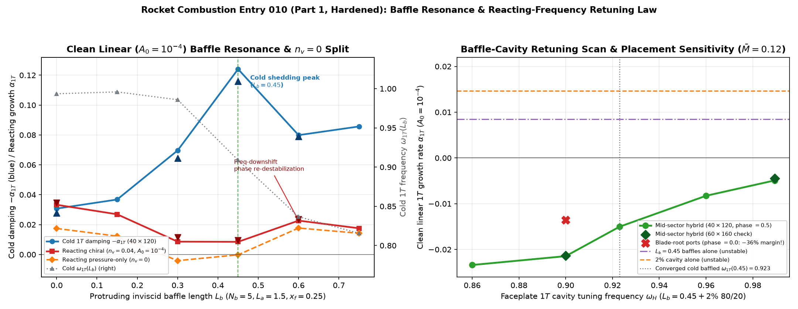
At M̄ = 0.16, a micro 1.0% wide-mouth (σo = 5.0%) 2T-only trim cavity stabilizes all modes linearly (αmax = −0.0306) and disarms Entry 009’s 2T Strouhal trap on 64×200 (217,500× energy cut vs. bare 7.18% rotating shock). Peer Review #7 (110 independent runs up to 120×360) proved the true orifice-drag cliff lies between σo = 2.5% (which falsely bled on 48×160 but chokes onto a 4.03% 2T shock on 64×200) and 5.0%, while 1T still subcritically triggers in A0 ∈ (0.015, 0.025]. Alongside Entry 010, we adopted repo-wide open-notebook governance (AGENTS.md, archived reviews/ receipts, verification badges, CITATION.cff, and scripts/check_repo.py).
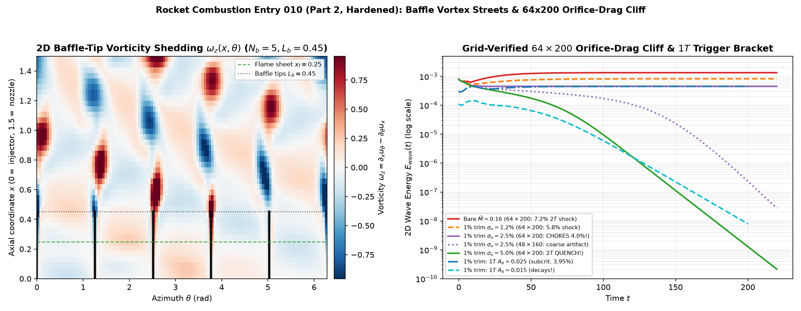
Milestone 3 Update: 2D Compressible Euler Throughflow & Multi-Mode Strouhal Resonance (009)
We solved Open Problem #1 from our synthesis by upgrading rocket-combustion/ from a 1D periodic ring to the full 2D (x, θ) conservative compressible Euler equations with physical steady axial throughflow M̄ > 0, an exact choked zero-swirl propellant injector at x = 0, and a Marble–Candel compact choked nozzle at x = La—with zero ad-hoc entropy-flush or swirl closures (steady preservation to 1.1×10−16, inviscid conservation to 1.9×10−16).
Physical convection naturally flushes entropy (8.7×107×) and uniform swirl (2.1×105×), isolating the pure negative Marble–Candel rarefaction echo (−0.366% at t = 11.01) and locking stationary limit cycles at ρ̄ = 0.9986–1.0010. Zero-swirl vorticity shedding from the faceplate creates sharp Strouhal damping peaks—but double-model Peer Review #6 uncovered a critical harmonic trap: tuning to the half-integer 1T cold-damping peak (M̄ = 0.16, St1T ≈ 1.5) puts 2T directly into an integer trough (St2T ≈ 3.0, npH,2T = 0.235), igniting a 6.53% 2T rotating limit cycle on 48×144 that coarse 32×96 grids hid.

Against a 6.9% 2D chiral rotating shock (np = 0.22, nv = 0.04), linearly stable odd M = 5 injector staggering (α = −0.0067; verified decaying under a linear flame) subcritically triggers at A0 = 0.015 on 48×144 due to its small linear margin plus 6.7–6.9× Erlang-4 cubic gain asymmetry, whereas passive Strouhal Mach shifting to M̄ = 0.18 annihilates the shock across all initial conditions (spin_1T, stand_seed, spin_2T) and grids (32×96, 48×144) with zero cavities or baffles.

Milestone 2 Update: Compressible Euler Shocks & Rotating-Shock Control (007–008)
We took the rocket-combustion/ track beyond bulk-linear acoustics into the full conservative 1D periodic compressible Euler equations (γ = 1.25, 2nd-order MUSCL-MC + HLLC Riemann solver, exact inviscid conservation to 4×10−16, and Fay–Burgers cubic weak-shock dissipation matching 0.2209 u03).
Gasdynamic shock steepening flipped two core bulk-linear predictions on their head: under residence-time entropy flushing (νres ∈ [0.01, 0.05]), Rankine–Hugoniot O(A3) shock losses cap saturated limit-cycle pressure by −28% (7.65% → 5.52% p′/p̄, N = 512 converged to 0.01%), quench subcritical triggering across all 16 N = 512 MC runs, and trigger a complete attractor/saddle exchange—reversing bulk-linear spinning selection (S → +1) to a standing-wave attractor (S → 0) governed by the Landau criterion kshA > 2(ac − as)A2.
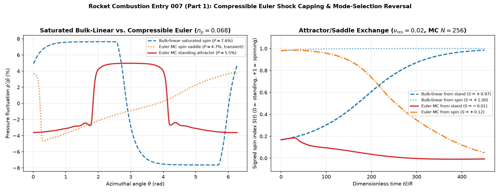
Turning on swirled chiral velocity coupling (nv > 0) in Entry 008 smoothly tilts that standing attractor along a hysteresis-free mixed-wave branch S*(nv) (verified at t = 900: +0.686 vs. +0.685) into a pure rotating sawtooth shock (S* ≥ 0.95 for nv ≥ 0.024)—while non-swirled even-|u| coupling never produces a strong spinning shock.
In a 5-way control shootout against a 6.9% chiral rotating shock (np = 0.060, nv = 0.025, t = 1600), pairing exact Fourier-collocation eigen-spectra with low-dissipation MC numerics revealed a striking reversal from Peer Review #5: the 80/20 cavity ring alone crushes 1T and 2T but leaves co-rotating 3T linearly unstable (α = +0.00192), whereas zero-hardware odd M = 5 injector lag staggering (τ ∈ {0.30, 2.50}) is the only single-mechanism all-mode stabilizer (αmax = −0.00235, 6,500× energy cut with zero cavities or baffles), and the Hybrid M = 5 + 80/20 doubles the all-mode margin (αmax = −0.00477).

Milestone 1: Three Tracks & First 12 Entries
1. Rocket Combustion Instability (000–006)
Starting from a 1D Crocco n–τ longitudinal baseline and scaling up to a 2D nonlinear cylindrical-annulus PDE, we tested passive stabilization without heavy protruding baffles. Two design laws stood out: an inverse-square cavity volume split (80% 1T / 20% 2T in an odd 5-pair ring, doubling worst-case margin over a naive 50/50 split) and odd-periodic azimuthal injector lag staggering (M = 3, 5 avoids the M = 2 Bragg-orientation trap that amplifies orthogonal standing waves by +67%).
Under calibrated quadratic orifice drag over long horizons (t = 900), widening cavity mouth open-area ratio from 1.5% to 3.5% raises 2D finite-amplitude 1T bomb survival by ~2–4× in amplitude (~4–16× in energy) for ξH ≤ ξHEP, while over-damping above the exceptional point cuts wide-mouth margin in half.

2. Plasma Nozzles & MHD Propulsion (000–002)
Magnetic nozzles accelerate hot plasma without material walls, trading Alfvén detachment (MA = 1) against dipole flare divergence. We paired a quasi-1D conservative finite-volume nozzle baseline with a 2D pseudospectral (IFRK4) resistive-MHD shear solver and an exact source-free compliant-flux-tube MHD conservation law (choking at the Roberts–Webb tube speed cT < cs, inflating downstream as A ∝ Bvac−2/γ).
In 2D resistive MHD, sub-Alfvénic (MA < 1) Kelvin–Helmholtz shear breakdown obeys a clean Re-independent Stuart-number law, Rm,crit = Nc(kxa) MA2, with longer wavelengths breaking down at larger Rm (Nc = 1.47 at kxa = 0.125 vs. 0.57 at 0.50).

3. Renewable Power Grid Stability (000–001)
Moving beyond space propulsion, we opened a track on nonlinear AC synchronization in 100% inverter-based renewable grids. We derived an exact closed-form 4-bus AC Braess’s paradox proving that adding infinite parallel capacity to a single line in a stressed ring cuts global synchronous capacity by −11.99% (2.000 → 1.7602) and triggers an immediate time-domain blackout.
On a 12-bus two-area grid under N−1 tie-line + generator-trip faults, we found a sharp blind spot in linear H2 inverter placement: linear norms rank exporting-only and importing-only Grid-Forming (GFM) placement almost identically and worst overall, yet horizon-robust nonlinear survival proves importing-side GFM survives 3.14× larger faults than exporting-side (2.285 vs. 0.728 unsaturated; 2.118 vs. 0.740 under per-bus droop cap hbus = 0.24). Among balanced cross-corridor designs, distributing GFM across all 6 buses shares per-bus droop headroom for +21% higher fault survival than concentrated 2-bus tie-line gateways.


Why Adversarial Cross-Model Peer Review Mattered
Every one of our seven independent peer reviews caught real mathematical or numerical traps that looked completely plausible at first glance (full receipts archived in reviews/):
- Unfiltered k = 0 bulk runaway (Review #1): Standard Crocco pressure coupling has a positive real static root for every n > ζ. Fixed uniformly with a DC-blocking high-pass filter Hhp(s) and real-axis scans.
- Short-horizon bomb illusions (Reviews #2 & #3): Because the 80/20 cavity ring’s slowest linear decay time scale is τ ≈ 550, horizons of t = 130–180 hid slow regrowth at t = 400–900. Replaced with t = 1000 linear checks and t = 900 dense amplitude scans.
- Unequal-enthalpy nozzle metric & finite-Re box mode (Review #3): Comparing compliant (cT-choked) and rigid nozzles at equal throat static state gave the compliant nozzle 19% less stagnation enthalpy, creating a spurious negative gain; re-normalizing to equal H0 revealed true near-zero high-β erosion. Similarly, the intermediate-Rm MHD trough proved to be a finite-Re continuum mode.
- Ghost-crawl false positives in power-grid survival (Review #4): A 26 s horizon accepted trajectories with no post-fault equilibrium that slipped at t = 30–44 s, while rejecting slow-settling saturated cases. Restoring an exact saturated rotating-frame equilibrium check over T = 80 fixed both.
- Numerical-dissipation masking of 3T & closure sensitivity (Review #5):
minmodat N = 256 added −5.6×10−3 excess damping on 3T, hiding the 80/20 ring’s true linear 3T instability (α = +0.0019) by 10,000×, and the smooth chiral branch S*(nv) proved conditional on residence entropy flushing (νres > 0). Switching to the MC limiter, adding exact Fourier-collocation eigen-spectra, and reporting full νres sensitivity tables fixed both. - 2T Strouhal harmonic trap, coarse-grid bistability & inlet-tail echo (Double-Model Review #6): Checking 1T alone overstated the M̄ = 0.18 global Hopf gain (4.77× vs. true all-mode 3.18×) and missed a 6.53% 2T rotating limit cycle at M̄ = 0.16 masked by 32×96 vorticity damping; coarse 28×96 grids also hid low-gain bistability at M̄ = 0.06, and a Gaussian tail touching x = 0 produced a spurious positive bounce ahead of the true negative Marble–Candel rarefaction. Re-running on 48×144 with multi-mode spectra and a zero-tail entropy spot hardened every result.
- Grid-dependent orifice cliff, nonlinear fit inflation & reacting-frequency retuning (Review #7): Production 40×120 and 48×160 grids added −0.01 to −0.03 numerical 2T damping, hiding bare 2T growth and making σo = 2.5% falsely decay (it locks onto a 4.03% 2T shock on 64×200); A0 = 0.002 fits were inflated by cubic-flame growth; and optimal baffle–cavity tuning proved to target the baffled reacting frequency with mid-sector ports (blade-root ports lose −37%). Re-running on 64×200 and 80×240 at A0 = 10−4 hardened every design law.
Reproduce Everything Locally
Every plot and metric in the repository is generated from scratch with pinned dependencies via uv:
git clone https://github.com/marcelolx/math.git
cd math
uv sync
# Run repository-wide consistency gate:
uv run python scripts/check_repo.py
# Run any entry's verification script:
uv run python rocket-combustion/sim/exp010_2d_throughflow_baffles_cavities.py
uv run python rocket-combustion/sim/exp009_2d_euler_throughflow.py
uv run python plasma-nozzles/sim/exp001_mhd_kelvin_helmholtz.py
uv run python grid-stability/sim/exp001_gfm_placement_and_saturation.py
Next up: closing the remaining reduced 1T cycle inside the metric-corrected true-3D smooth curved bell (5.49% spin / 4.25% stand) via segmented Nodal Mid-Ring + shroud tuning and converged 3D no-slip viscous baffle wakes (testing Entry 011’s 18–19% 2D wake penalty in full 3D, rocket-combustion/017), 2D axisymmetric magnetic nozzles with exterior field back-reaction (plasma-nozzles/003), and full inverter current-limiting + reactive Q–V coupling (grid-stability/002).